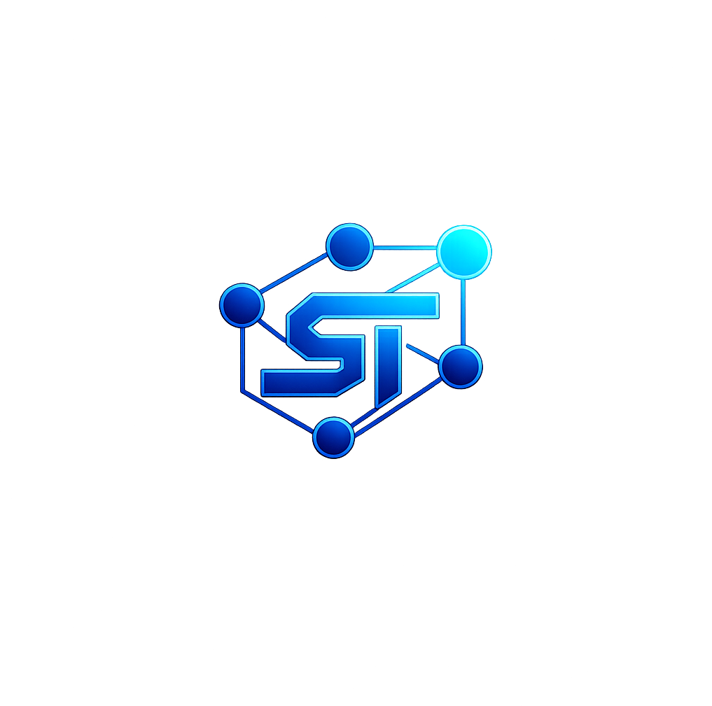

RTS Device Suite Pro
A modular, privacy-first toolkit for advanced Android device management and data recovery.
RTS Device Suite Pro
A powerful, easy-to-use tool to help you take control of your Android phone and save your files.
App Purpose
RTS Device Suite Pro serves as a comprehensive "all-in-one" toolkit for Android users. It is designed to manage complex storage environments, perform deep data recovery, automate backups, and optimize overall system performance through a centralized, high-tech interface.
What it's for
RTS Device Suite Pro is like a Swiss Army knife for your phone. It helps you manage your files, find lost photos, keep your data safe with backups, and make your phone feel like new again with simple optimization tools.
Core Modules & Development Status
Note: As this is an active project, modules marked as "Functional" are currently in a high-fidelity beta state and undergo continuous refinement.
Dashboard & System Monitoring Home Screen & Health Check Functional
- Health Score & Status: Health Score: Dynamic calculation based on storage, battery, temperature, and maintenance tasks. A single number that tells you how well your phone is doing.
- Real-time Metrics: Live Stats: Real-time tracking of CPU Temperature, Battery Level, RAM Usage, and Uptime. See how hot your phone is, how much battery is left, and how fast it's running.
- Model Intelligence: Smart Advice: Identifies device-specific quirks and provides tailored maintenance advice. Gives you tips specifically for your model of phone.
- Active Alerts: Warnings: Instant notifications for critical storage, low battery, or high thermal levels. Tells you instantly if your phone is getting too hot or running out of space.
Backup & Restore Module Safety & Backup Refining
- Data Scanning: Deep Scan: Comprehensive scanning for SMS/MMS, Call Logs, Contacts, APKs, and User Files. Finds all your messages, contacts, apps, and photos so you can save them.
- WorkManager Execution: Background Saving: Background processing with persistent progress notifications for long-running tasks. Backups keep running even if you close the app, showing you progress in your notifications.
- Restore Module: Bring Back Files: Supports archive selection, granular item recovery, and SMS default app switching. Lets you pick exactly which files or messages you want to put back on your phone.
- Cloud Connector: Online Sync: Partial Placeholder UI for Google Drive/OneDrive sync (Backend in development). Upcoming feature to save your backups to Google Drive or OneDrive.
Cleaner & Maintenance Cleaning & Speed Functional
- Junk Scan: Junk Finder: Automated identification of temporary files, logs, and empty folders. Finds hidden files and "trash" taking up space on your phone.
- Guided App Cache: Easy Cache Clean: Step-by-step assistance for clearing app-specific cache on non-root devices. Walks you through cleaning app data to free up space and fix slow apps.
- Safety Guidance: Safe Help: Educational overlays explaining the impact of clearing different data categories. Explains exactly what will happen before you delete anything, so you stay safe.
- Auto Clean: Automatic Cleaning: Scheduled maintenance triggers integrated with the Automation Engine. Set it and forget it—the app cleans up your phone on a schedule.
Network Health & Optimization Internet & Wi-Fi Functional
- DNS Benchmark: Speed Test: Performance testing against Cloudflare, Google, Quad9, and OpenDNS. Finds the fastest internet connection for your phone.
- Latency & Jitter: Connection Check: Real-time diagnostic testing for connection stability and packet loss. Shows you if your Wi-Fi is acting up or dropping out.
- Optimization: Auto-Fix: Socket flushing and interface rebinding for enhanced stability. Fixes common internet glitches with one click.
- Local Network Scan: Who's on my Wi-Fi? Discovery and monitoring of all devices on the active Wi-Fi network. Shows you every phone, computer, and smart device connected to your Wi-Fi.
Recovery Module Photo & File Recovery Functional
- Deep Scan: Super Search: Advanced storage analysis to locate and identify recoverable media and documents. Digs deep into your phone to find deleted photos, videos, and files.
- Secure Delete: Permanent Erase: Permanent, irreversible file wiping for maximum privacy and data security. Deletes files so they can never, ever be recovered by anyone.
- Preview System: Photo Preview: Built-in viewer for images, audio, and video to verify items before recovery. See your deleted photos before you choose to bring them back.
- Recoverability Score: Chance of Success: Estimates the probability of successful restoration for each identified file. Tells you how likely it is that a file can be fully saved.
Advanced Tools Expert Utilities Functional
- Command Terminal: Pro Terminal: Direct shell access within the app for advanced users. Lets expert users run advanced commands directly on their phone.
- Local ADB Client: Computer Link: Integrated setup and console for wireless debugging (requires manual configuration). Lets you talk to your phone wirelessly from a computer for pro settings.
- Resource Monitor: Usage Graphs: High-fidelity graphs tracking CPU and Memory usage over time. See beautiful charts of how hard your phone is working.
- File Explorer: Pro File Manager: Modular file management with category-specific views and quick actions. A powerful way to browse every file on your device.
Help & Transparency Help & How-To Functional
- Searchable Help: Quick Search: Comprehensive search for child-friendly explanations and feature walkthroughs. Search for easy instructions on how to use any part of the app.
- Permission Registry: Privacy Check: Transparent registry explaining the necessity and impact of every requested permission. Explains exactly why the app needs certain permissions and how it keeps you safe.
- Developer Mode Guide: Pro Setup Guide: Integrated step-by-step instructions for external system configurations. Easy instructions for turning on advanced "Developer Settings" on your phone.
Get the Experimental APK
Interested in testing the "Complete Android Lifecycle Engine"? Download the current experimental build below.

Click to Download Experimental Build
Media Showcase
Interface Walkthrough
A deep dive into the dashboard, theme engine, and permission management system.
System Architecture
An AI-generated visual breakdown of the RTS modular backend and recovery logic.
RTS Core Concepts
NotebookLM Discussion

Storage Analyzer
Visualizing file distribution and system health metrics.
Current Focus
The project is currently in active development. While many core modules are functional, primary focus is now on transitioning the **Cloud Connector** from a placeholder UI to a robust production engine for Google Drive and OneDrive sync. Additionally, I am refining the **Backup Viewer Site** and improving the reliability of the **Deep Scan** recovery algorithms across varied device hardware.
The Backup Viewer Philosophy
While RTS Device Suite Pro aims to restore most files to their original system locations, SMS and MMS messages present a unique technical challenge. To ensure 100% data safety and universal compatibility, I have chosen a "Viewer-First" approach for messaging history.
Safety Over Force
Restoring messages directly to the Android system database requires invasive permissions and is fraught with device-specific edge cases. A "force-restore" approach can potentially destabilize messaging databases on certain hardware. By rendering your backups into a local, high-tech webview, RTS provides a seamless way to browse your history safely, without requiring dangerous system-level write access.
An Open Ecosystem
I believe in modular utility. No app I create is meant to be a restrictive "all-or-nothing" solution. If you require a full system-level restore for your messages, I encourage you to use specialized tools that have mastered that specific niche.
For example, SMS Backup & Restore by SyncTech Pty Ltd (available on the Google Play Store) is a fantastic utility that I have personally used with success. I am not affiliated with them in any way; I simply believe in recommending the best tool for the job. RTS is here to provide the options others don't—not to claim it's the only tool you'll ever need.
Open Source & Transparency
In alignment with my philosophy of open-source and non-restrictive development, the complete source code for RTS Device Suite Pro is available for review, contribution, and audit on GitHub. Additionally, the source code for this website is also public.
Developed by: Don Semsey
Part of the RTS Device Suite of professional system tools.